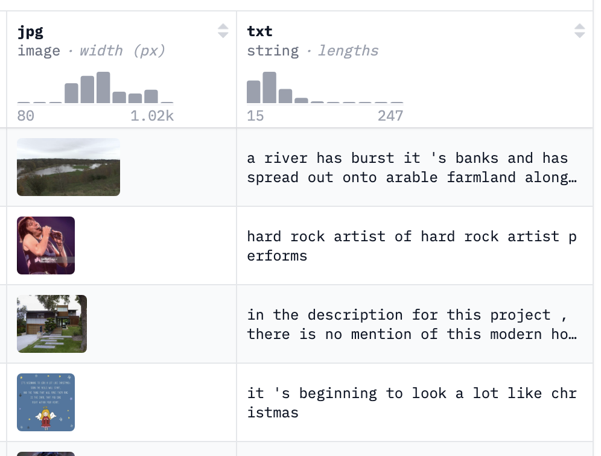

The Github repo is found here.
Motivation
What type of CLIP implementation can be trained on a single GPU? That question motivated me to replicate OpenAI’s CLIP system (published in 2021), which learns joint embeddings of images and text captions using contrastive learning. I also decided to use an RNN as the text encoder rather than the traditional Transformer, to test whether an RNN would be better able to handle the short, simple captions typical of CLIP datasets.
For training, I chose pixparse/cc3m-wds because its captions are in English, relatively clean, and usually descriptive. Other datasets I looked at, like mlfoundations/datacomp, had noisier captions, often in multiple languages, or even just filenames like IMG_20220523.jpg.
To keep the parameter count down, I downsampled and cropped images to 128×128 pixels (keeping color channels). The image encoder was a ResNet-34 CNN, while the text encoder was a two-layer bidirectional RNN with hidden size 256. Both image and text embeddings were 512-dimensional.
When OpenAI trained CLIP, their smallest model was trained with a batch size of 32,768. In contrast, with the 24 GB of VRAM in my GPU, I was able to fit a batch size of 2048 samples.

Training
In many deep learning tasks, the loss is just the average of per-sample losses, so you can simulate larger batches by summing over micro-batches. However CLIP uses a contrastive loss which compares every image–text pair in the batch, making it less obvious how to scale effective batch size. To push the limit, I implemented an XBM queue of size 2048. This stored recent embeddings and appended them to the current 256-sample batch for loss computation.
At first, the network completely failed to learn, no matter the learning rate. It only began to improve after I removed the XBM queue. My guess is that stale embeddings in the queue hurt training more than the larger effective batch size helped. Once removed, training stabilized and the loss decreased (see the wandb plots below).

Future directions could include reintroducing the XBM queue gradually, only after the loss starts to drop or plateau. Another idea would be to use the technique publised in the MoCo paper, in which the network is trained while using a momentum-averaged copy of the network to produce queue embeddings.
Results
On validation, the model reached 13% text accuracy and 16% image accuracy. Given that random chance with batch size 2048 would yield only ~0.04%, the model clearly learned meaningful associations between images and captions. To test zero-shot performance, I tried ImageNet classification using the same trick as OpenAI: prompts like “this is a picture of {label}.” The results: 8.3% top-1 accuracy and 19.6% top-5 accuracy. These results weren't as great as I hoped for, but they were not surprising considering ImageNet labels are often obscure, containing labels such as “agaric” and “gyromitra”, which even I had to look up.
I also tried some light prompt engineering by asking LLMs to generate simple full sentence descriptions of the ImageNet labels (e.g., “agaric is a type of mushroom with gills”). But even then, accuracy only shifted to 6.7% top-1 and 18.8% top-5.
Nevertheless, I was happy to see the model learn embeddings well above random levels and attribute its less than state-of-art performance to the small model size, small training set size, and the experimental use of an RNN as the text encoder. If I continue exploring how to improve performance using the same hardware setup, my first next steps would be to train on more data (a 12M version of cc3m is available) and to switch to a Transformer as the text encoder.